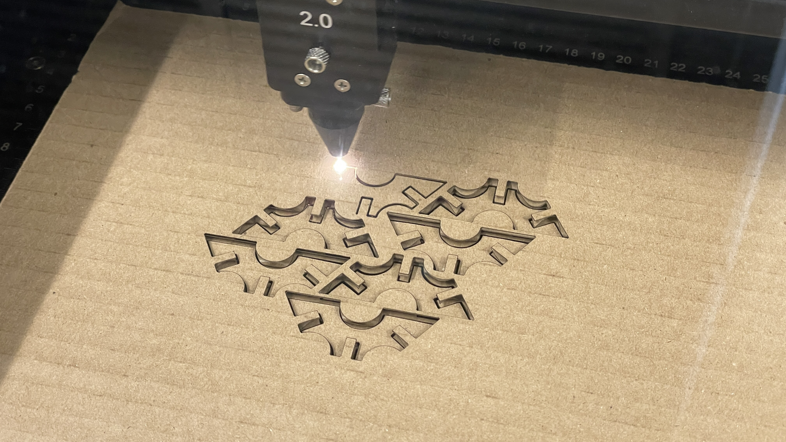

Class 2: 2D design and cutting
2D Cutting:
Our project in this class was to create a press-fit design. This could be anything from an abstract sculpture to a sophisticated box. It just had to meet a few criteria. No adhesives Design using CAD and laser cut
Tolerance Test:
For my project, I knew that I would need to know what tolerances to use so everything would fit together snugly. I decided to 2D model a test for all the different press fit connections I could use.
After I printed out the piece I wrote notes on one of the pieces and used this to better my future designs.

Abstract Sculpture:
After testing I decided that I wanted to create an Abstract Sculpture.
I looked at some previous designs for inspiration like this one, and then I decided on a shape.
Process:
I knew that I would have to have many of these pieces so I also created a sketch with many of these shapes.

I then laser cut out all the shapes.
Then I assembled my shapes into a 3D object!
Final Sculpture:
Intro To Cad:
CAD (computer-aided design) is a family of software that allows engineers, creators, architects, etc to precisely digitally model objects.
This week we learned the fundamentals of CAD and did three things.
- Used a tutorial to learn how to 2D Sketch
- Created 2 household objects and put them in an assembly
- Designed a press-fit object, 2D modeled, and laser cut it
Tutorial:
This was the tutorial I used: Fusion 360 Tutorial for Beginners - 1.
I used Onshape to complete this tutorial as I am more comfortable with the program.
In the tutorial the instructor had you create 3 shapes using many different tools.
Drawing 1:
Note: For this shape, I had to add a construction line to constrain the drawing properly.
I think this is something to do with the fusion 360 vs Onshape programs
Tools Used: line, arc, dimension, construction
Drawing 2:
Tools Used: Circle, line, tangent, cotangent, construction, trim, dimension
Drawing 3:
Tools Used: Ellipse, dimension
House Hold objects:
Another assignment we had this week was to use calipers to measure and then model household objects. I chose to model a pencil and a USB stick.
Pencil:
1. Get the Dimensions of the pencil
2. Model
3. Color
USB Drive
1. Get Dimensions

2. Model
3. Color
Importing Assets:
Another thing that we could do was import assets to add to our final assembly
I imported 2 assets:
Laptop: https://grabcad.com/library/a-laptop-1
Desk: https://grabcad.com/library/adjustable-desk-8
Assembly:
I created a simple desk setup for my assembly.
The colored Objects are the ones I modeled.